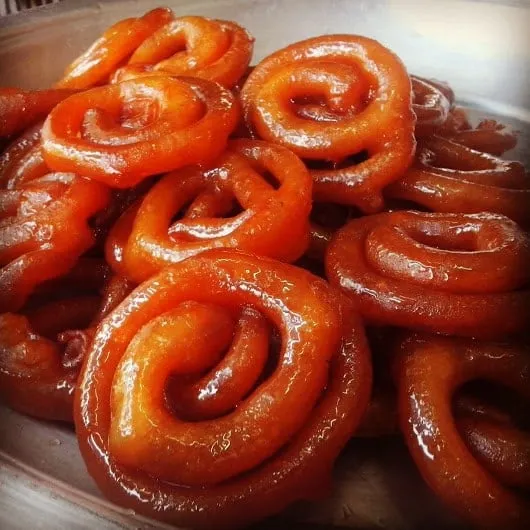

Back to home page
Jilapi

Description
Jilapi, also known as jalebi or zalabia, is a traditional fried sweet pastry popular across the Indian subcontinent, the Middle East, and North Africa, often enjoyed during festive occasions. It features a spiral shape, crispy exterior, and a juicy, chewy interior when soaked in sweet syrup.
Ingredients
- All-purpose flour: 3 cups (360 grams)
- Rice flour or chickpea flour: 4 tablespoons (40 grams)
- Baking powder: 2 teaspoons (10 grams)
- Yogurt (curd): ½ cup (120 milliliters)
- Warm water: 1 cup (240 milliliters), plus more as needed
- Saffron strands: A few threads (optional, soaked in 1 tablespoon warm milk)
- Cardamom powder: ½ teaspoon (2 grams)
- Sugar: 1¾ cups (350 grams)
- Water: 1 cup (240 milliliters)
- Lemon juice: 2 tablespoons (30 milliliters)
- Rose water: 2 tablespoons (30 milliliters)
- Honey: 2 tablespoons (30 milliliters)
- Oil or ghee: As needed for frying (200 milliliters recommended)
Steps
- In a large bowl, mix all-purpose flour and baking powder.
- Add yogurt, warm water, saffron (if using), and cardamom powder. Stir until the mixture forms a thick, smooth batter resembling a very thick crepe batter.
- Cover the bowl and let the batter rest at room temperature for 6 hours or overnight to ferment, which enhances flavor and texture.
- Prepare the syrup: In a heavy-bottomed pan, combine sugar and water. Bring to a boil over medium heat, then reduce to a simmer. Cook until the syrup reaches a "1-string" consistency—test by taking a small amount, cooling it slightly, and pulling it between your fingers; it should form a single thread.
- Add lemon juice, rose water, honey, saffron, and cardamom to the syrup. Stir well and remove from heat. Let it cool slightly before using.
- Heat oil or ghee in a deep pan over medium-high heat. Test the oil by dropping a small amount of batter; if it rises immediately, the oil is ready.
- Transfer the batter to a squeeze bottle or pastry bag. Squeeze the batter in a spiral shape into the hot oil, forming concentric circles.
- Fry the jilapis until golden brown on both sides, turning as needed.
- Remove the jilapis from the oil using a slotted spoon and immediately immerse them in the warm syrup.
- Let them soak for 2–3 minutes to absorb the syrup, then transfer to a cooling rack to drain excess syrup.